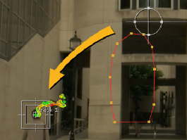

使用旋转和关键帧创建动画蒙版可能是一个非常耗时的过程，但是 Nuke 的跟踪器节点可以为你做一些最初的工作，尤其是垃圾遮罩。
一旦你有了一些可靠的跟踪数据，你就可以在没有关键帧的情况下驱动旋转形状:
| 1。 | 跟踪您想要遮罩的区域中的特征。在该示例中，图形的头部作为遮罩的驱动点。 |
| 2. | 将 Roto 节点添加到脚本 (键盘快捷键) O ) 并使用跟踪数据绘制您打算驱动的形状。在这种情况下，我们不需要太准确，因为我们正在创建垃圾哑光。 |

| 3. | 在 Roto 属性面板中，单击 变换 选项卡并在形状列表中选择哑光。 |
| 4. | 右键单击 翻译 控件的动画图标 然后选择 链接到 > 跟踪器 1 > 轨道 1 . |
跟踪器的 Track_z 和 Track_y 关键帧被复制到 Roto 的 翻译 控制，应用相同的翻译 和 偏移到哑光形状。
| 5. | 要弥补这一点，请选择 根 在形状列表中，使用查看器中的变换手柄正确重新定位旋转形状。 |
|
 |
|
| 带偏移的哑光。 | 重新定位后同样的哑光。 |
| 6. | 擦洗播放头以查看跟踪路径后的哑光。 |
|
|